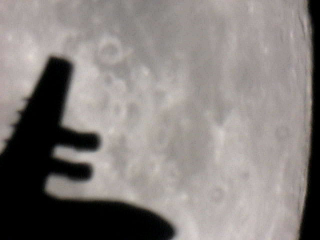
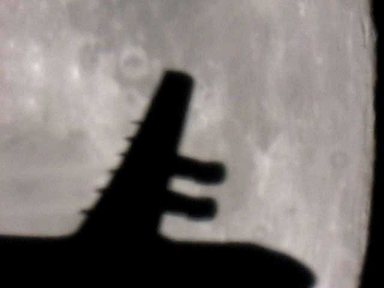
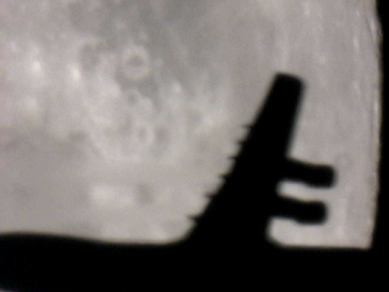
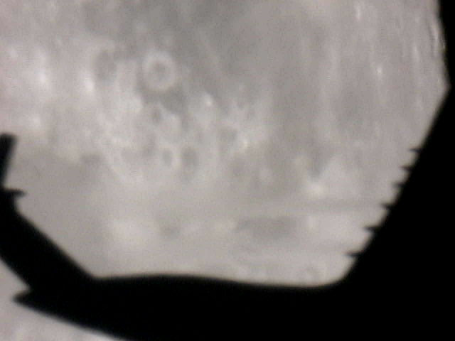
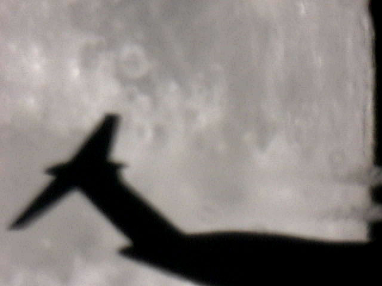
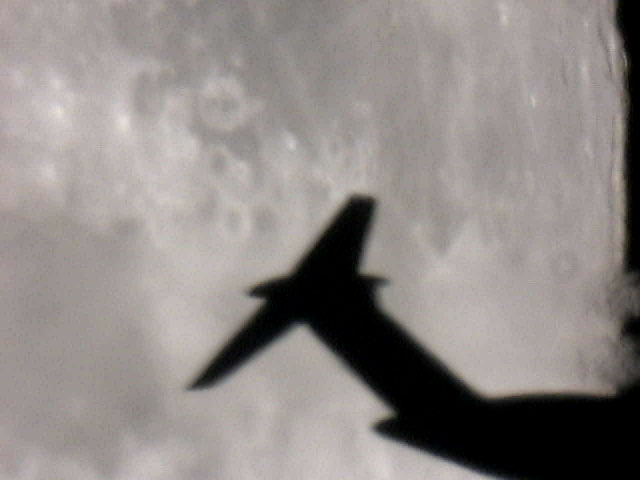

When shooting a mosaic of the moon a jet crossed by. Images were shot a 15 FPS with an unmodified Philips ToUCam 740K on a Celestron 8 primary focus.






2012 © Jordi Íñigo Griera | astrosurf.com/jig